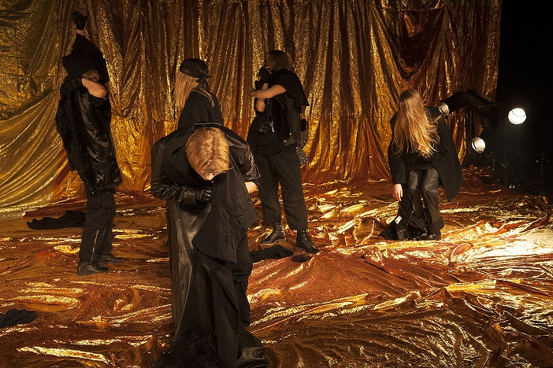
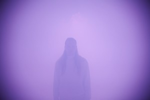

RAVNEDANS: LAB m/ KRISTIN RYG HELGEBOSTAD - 5 dgr. FRIST 20/5!
- Kategori:
- Tverrfaglige kurs
Tverrfaglige kurs
Åpent for profesjonelle skuespillere og andre profesjonelle deltakere med spesifisert bakgrunn og erfaring. Se søknadsteksten for spesifikasjoner. Legg ved CV. - Dato:
- 10.07.2016 til 14.07.2016
- Start kl :
- 11:30
- Slutt kl :
- 15:30
- Pris:
- 950,-
- Adresse:
- , Kristiansand

{kind=link}
Ravnedans inviterer til LAB med visning!
For profesjonelle skuespillere og dansere
Kristin Ryg Helgebostad vil i Ravnedans LAB fokusere på energien i et felleskap i forvandling gjennom lyd og bevegelse.
I flere produksjoner har hun jobbet med energien i forholdet mellom det vi ser og det vi hører både som noe absurd, noe suggererende og noe med en komisk energi som fra utøverperspektiv ikke har som formål å underholde. Hun er opptatt av hvordan et felleskap kan smelte sammen til et manende, men uforutsigbart hele som jobber frem korte og lange energibølger i et lyttende samspill. Midt iblant disse kurvene ønsker hun overraskelser hjertelig velkommen og hun er opptatt av en ikke-hierarkisk sammenblanding av performative uttrykk.
Mye av det fysiske arbeidet dreier seg om egengenerert lyd enten som stemme eller bevegelse som er uløselig knyttet opp mot fysikalitet. Kroppslig er hun opptatt av å tydeliggjøre forskjellen på når vi setter oss selv til side og kanaliserer fokus og energi ut mot et felleskap og når vi sender fokus innover mot oss selv og hvordan dette kan skape ulike konsentrasjoner energimessig både fra utøverperspektiv og fra et koreografisk perspektiv. Under Ravnedans-LAB vil hun la seg inspirere av kor og orkestere, ikke som et tema i seg selv, men som en modell for hvordan man i praksis kan jobbe på gulvet med et felleskap i forvandling. Hun er opptatt av at hver deltaker kan komme med sine interesser/instrumenter/tilnærminger og hvordan disse individuelle interessene kan fasciliteres i et kollektiv.
Praktisk info
Påmelding: Kort søknad med motivasjon for deltakelse og biografi til ravnedans.billetter@gmail.com
NB! Begrenset antall plasser og det ønskes en miks av skuespillere og dansere
Påmeldingsfrist: 20. Mai 2016
Om Kristin Ryg Helgebostad
Kristin kommer fra Asker og har sin utdannelse fra Kunsthøgskolen i Oslo (BA i utøvende dans og MA i koreografi). Hun jobber i dag som utøver i andres prosjekter, i samarbeid med andre koreografer og med å realisere egne prosjekter. Kristin har koreografert for produksjoner ved Riksteateret og Rogaland teater, samt egne prosjekter som "Jordjenta" med Berstad/Helgebostad/Wigdel som ble vist på BBT i Oslo ved Oslo Internasjonale Teaterfestival, skal på Norgesturne til høst 2014 og vises på den nordiske festivalen Ice Hot 2014 i desember. Som utøver har hun arbeidet med koreografer som Ingri Fiksdal, The Line, Elle Sofe Henriksen m.fl.
{kind=link}
Om Ravnedans
Ravnedans er Sør-Norges første festival for samtidsdans. Festivalen ble startet sommeren 2010, og har siden blitt arrangert hver sommer. Festivalen er et voksende møtested for danse- og scenekunstnere i nord, og et sted å bli inspirert og møte andre danse- og scenekunstnere.
Ravnedans presenterer samtidsdans for syvende gang denne sommeren, med forestillinger, workshops, seminarer og andre sosiale arrangementer.
Mer informasjon om Ravnedans her: http://www.ravnedans.com/
{kind=link}